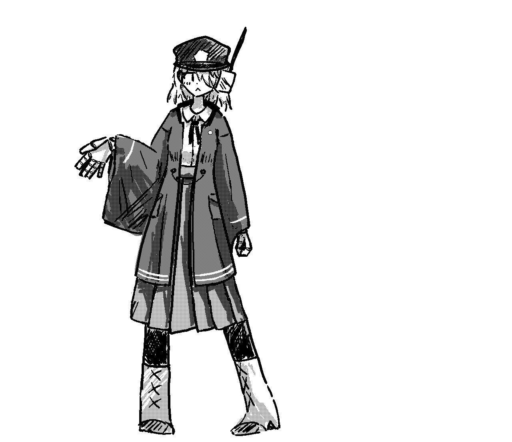

十月二十七日（木）晴天
今朝、霧が濃かった。 校舎の時計塔も霞み、あたかも彼岸の幻影の如くに見えた。
本日も、紅一点の「ゆぃぐぬぃ」嬢は、私共男子の間にひとり座していた。 米国からの留学生である彼女のその髪は煤けた金糸の如く、瞳は琥珀を冷やしたような色を帯びている。 声を交わしたことは、未だ無い。されど、否応なく目を引かれるのは事実だ。
六限目の自然哲學の授業が終わり、皆が荷物をまとめて教室を出ていったその時、 私は彼女の座っていた席に一枚の紙片が残されているのを見つけた。 濃紺の罫線に、奇妙な幾何図形と、象形の如き異文字。 右下には鉛筆書きでこう書かれていた。
「この謎を解きし者、星の門を叩く資格を得ん──Y」
ぞくりと寒気が背を這った。悪戯にしては妙に本気だった。 私は彼女を探して廊下を走った。 だが彼女は、どこにも居なかった。まるで霧の中に消えたかのようだった。
夜、煤けた洋燈の下で、私はその謎と向き合うことにした。

十月二十八日（金）曇
それは只のパズルのようでいて、解いてゆくごとに心が蝕まれるような感覚に襲われた。 奇妙な夢も見た。大きな門、歪んだ空、そして黒い海。 そこに立つ、羽も足も無い「何か」。 それでも、私は最後の符号を読み解いた。
今朝、私は何気ない素振りを装いながら、ゆぃぐぬぃ嬢の机へと近づいた。 「これ、昨日落としていたようだ」と、ただそれだけ告げて紙を差し出した。 彼女は一瞬だけ、驚いたように私の顔を見つめ、それから唇をほんの少しだけ弧にして、微笑んだ。 私はそれを見るのが、初めてだった。 その笑みは、まるで古の封印が解かれたような、恐ろしくも美しいものだった。 ほんの一瞬、彼女の瞳の奥に、星辰が渦巻いていた気がした。
六限後の彼女の机には、また紙片が置かれてあった。
十月二十九日（土）曇
夢見が悪い。 昨夜はあの紙に描かれた図形が、寝床の天井に浮かんで見えた。 いくつもの領域の重ね合わせが解を成すことは分かっているのだが。
授業中、隣席の学友が「おい、地図帳貸してくれ」と肩を叩いてきたが、私は気づかなかった。 意識は手帳の端に書き付けた数字の羅列に釘付けだったからだ。
ゆぃぐぬぃ嬢は今日も静かだった。 一言も口を開かず、静かに筆を走らせていた。 あの笑みのことを思い出すたびに、心臓が一つ跳ねる。 あの紙は──ただの冗談ではない。 私の心の奥で何かが少しずつ「形」を持ちはじめている。